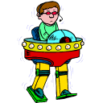
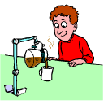
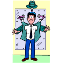
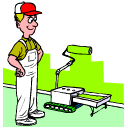

Simple Machines Passport Assignment 3
Create a compound machine that can help you do a job you do NOT particularly like to do. Use at least two of the simple machines that you have learned about in your research.
Draw and label a diagram of your new invention. Include an explanation of exactly what your new machine will do, and how it will make that job easier.



